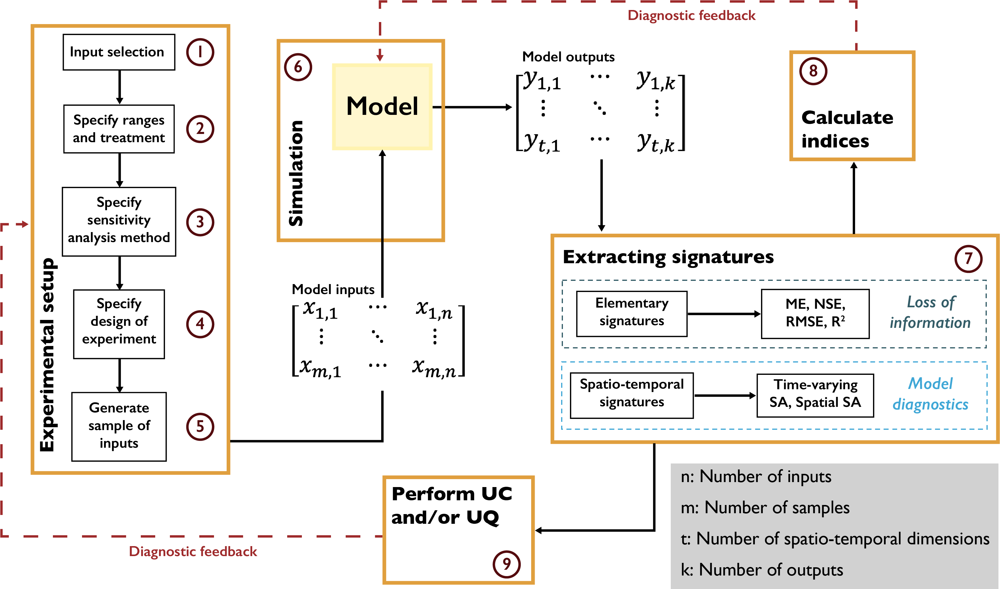

Understanding Errors: What Is Controlling Model Performance?
Understanding Errors: What Is Controlling Model Performance?¶
Sensitivity analysis is a diagnostic tool when reconciling model outputs with observed data. It is helpful for clarifying how and under what conditions modeling choices (structure, parameterization, data inputs, etc.) propagate through model components and manifest in their effects on model outputs. This exploration is performed through carefully designed sampling of multiple combinations of input parameters and subsequent evaluation of the model structures that are emerging as controlling factors. Model structure and parameterization are two of the most commonly explored aspects of models that have been a central focus when evaluating their performance relative to available observations [17]. Addressing these issues plays an important role in establishing credibility in model predictions, particularly in the positivist natural sciences literature. Traditional model evaluations compare the model with observed data, and then rely on expert judgements of its acceptability based on the closeness between simulation and observation with one or a small number of selected metrics. This approach can be myopic, as it is often impossible to use one metric to attribute a certain error and to link that with different parts of the model and its parameters [127]. This means that, even when the error or fitting measure between the model estimates and observations is very small, it is not guaranteed that all the components in the model accurately represent the conceptual reality that the model is abstracting: propagated errors in different parts of the model might cancel each other out, or multiple parameterized implementations of the model can yield similar performance (i.e., equifinality [17]).
The inherent complexity of a system hinders accepting or rejecting a model based on one performance measure and different types of measures can aid in evaluating the various components of a model as essentially a multiobjective problem [25, 26]. In addition, natural systems mimicked by the models contain various interacting components that might act differently across spatial and temporal domains [51, 55]. This heterogeneity is lost when a single performance measure is used, as a highly dimensional and interactive system becomes aggregated through the averaging of spatial or temporal output errors [15]. Therefore, diagnostic error analyses should consider multiple error signatures across different scales and states of concern when seeking to understand how model performance relates to observed data (Fig. 4.1). Diverse error signatures can be used to measure the consistency of underlying processes and behaviors of the model and to evaluate the dynamics of model controls under changing temporal and spatial conditions [128]. Within this framework, even minimal information extracted from the data can be beneficial as it helps us unearth structural inadequacies in the model. In this context, proper selection of measures of model performance and the number of measures could play consequential roles in our understanding of the model and its predictions [129].
As discussed earlier, instead of the traditional focus on using deterministic prediction that results in a single error measure, many plausible states and spaces could be searched for making different inferences and quantifying uncertainties. This process also requires estimates of prior probability distributions of all the important parameters and quantification of model behavior across input space. One strategy to reduce the search space is filtering of some model alternatives that are not consistent with observations and known system behaviors. Those implausible parts of the search space can be referred to as non-physical or non-behavioral alternatives [50, 104]. This step is conducted before the Bayesian calibration exercise (see Chapter A).
A comprehensive model diagnostic workflow typically entails the components demonstrated in Fig. 4.1. The workflow begins with the selection of model input parameters and their plausible ranges. After the parameter selection, we need to specify the design of experiment (Chapter 3.3) and the sensitivity analysis method (Chapter 3.4) to be used. As previously discussed, these methods require different numbers of model simulations, and each method provides a different insights into the direct effects and interactions of the uncertain factors. In addition, the simulation time of the model and the available computational resources are two of the primary considerations that influence these decisions. After identifying the appropriate methods, we generate a matrix of input parameters, where each set of input parameters will be used to conduct a model simulation. The model can include one or more output variables that fluctuate in time and space. The next step is to analyze model performance by comparing model outputs with observations. As discussed earlier, the positivist model evaluation paradigm focuses on a single model performance metric (error), leading to a loss of information about model parameters and the suitability of the model’s structure. However, a thorough investigation of the temporal and spatial signatures of model outputs using various performance metrics or time- and space-varying sensitivity analyses can shed more light on the fitness of each parameter set and the model’s internal structure. This analysis provides diagnostic feedback on the importance and range of model parameters and can guide further improvement of the model algorithm.
{kind=link}

Diagnostic evaluation of model fidelity using sensitivity analysis methods.¶
Note
Put this into practice! Click the following badge to try out an interactive tutorial on implementing a time-varying sensitivity analysis of HYMOD model parameters: HYMOD Jupyter Notebook